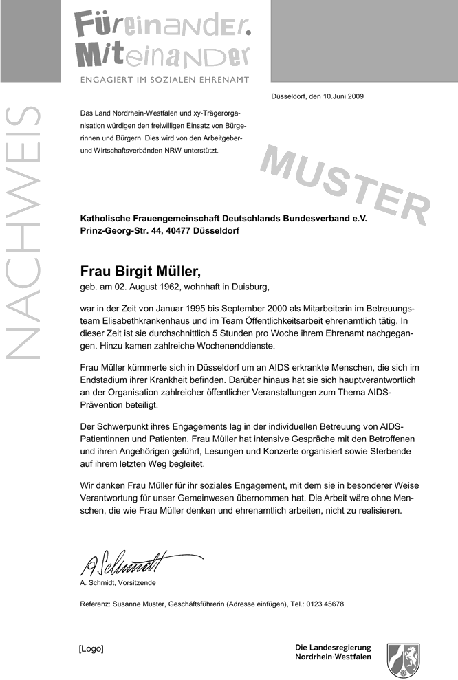

Engagementnachweis Nordrhein-Westfalen
Was ist das?
Der Engagementnachweis Nordrhein-Westfalen „Füreinander. Miteinander – Engagiert im sozialen Ehrenamt“ dokumentiert und würdigt bürgerschaftliches Engagement in Nordrhein-Westfalen. Der Engagementnachweis belegt die fachlichen und sozialen Kompetenzen der bürgerschaftlich Engagierten und bescheinigt im Ehrenamt erworbene Fähigkeiten.
Die Initiative zum Engagementnachweis wird von Arbeitgeber- und Wirtschaftsverbänden in Nordrhein-Westfalen unterstützt. Denn: Immer mehr Unternehmen legen bei ihren Personalentscheidungen großen Wert auf die sozialen Kompetenzen ihrer Mitarbeiterinnen und Mitarbeiter. Für potenzielle Arbeitgeber kann der Engagementnachweis eine Entscheidungshilfe bei Einstellungen sein.
Engagementnachweis Nordrhein-Westfalen – Für wen ist er?
Der Engagementnachweis ist vor allem Anerkennung für das oftmals über Jahre geleistete Engagement. Er kann ehrenamtlich Aktiven aus allen Bereichen des sozialen Ehrenamts ausgestellt werden, unabhängig davon, ob sie in der gesundheitlichen Selbsthilfe, in Frauenprojekten, in der Jugendarbeit, in der Pflege, in der Arbeit mit Seniorinnnen und Senioren oder anderen sozialen Feldern aktiv sind.
Eine Reihe von Kommunen und Kreisen sowie Organisationen im Zuständigkeitsbereich des Innenministeriums stellen ebenfalls den Engagementnachweis aus.
Über den idellen Wert hinaus hat der Engagementnachweis auch einen beruflichen Nutzen. Er richtet sich an junge Menschen, an Frauen und an Männer, die nach der Familienphase wieder in den Beruf einsteigen wollen, sowie an Erwerbstätige, die sich beruflich verändern wollen. Sie können das Zertifikat für ihren beruflichen Werdegang nutzen.
Engagementnachweis Nordrhein-Westfalen – Was steht drin?
Der Engagementnachweis enthält Informationen über die Trägerorganisation, die Ehrenamtlichen und ihr Einsatzfeld, eine allgemeine Tätigkeitsbeschreibung sowie eine Danksagung. Auf Wunsch der Ehrenamtlichen kann der Nachweis ergänzt werden, beispielsweise um konkrete Angaben zur Tätigkeit und den besonderen persönlichen Leistungen.
Hierzu gehören die erworbenen Fähigkeiten bzw. Schlüsselqualifikationen. Dies sind zum Beispiel Team- und Kommunikationsfähigkeit, Kreativität und Abstraktionsvermögen sowie besondere Leistungsfähigkeit und kaufmännisches Wissen. Auch handwerkliche, pädagogische und psychologische Fähigkeiten oder das Organisationstalent der ehrenamtlich Aktiven können im Engagementnachweis aufgeführt werden.
Engagementnachweis Nordrhein-Westfalen – Wie bekomme ich ihn?
Ehrenamtlich Tätige erhalten den Engagementnachweis von ihrer Organisation, ihrem Verein, ihrer Instituion oder ihrer Kommune.
Eine Reihe von Trägerorganisationen des sozialen Engagements, die Spitzenverbände der Freien Wohlfahrtpflege, der Arbeiter-Samariter-Bund, das Deutsche Rote Kreuz und die Freiwilligenzentralen und -agenturen, um nur einige zu nennnen, können den Nachweis schon jetzt ausstellen. Gehört eine Institution noch nicht zu den Ausstellungsberechtigten, so kann sie sich im Ministerium für Familie, Kinder, Jugend, Kultur und Sport des Landes Nordrhein-Westfalen informieren, welche Voraussetzungen sie erfüllen muss, um den Engagementnachweis auch ihren Ehrenamtlichen anbieten zu können.
Auch Organisationen und Initiativen aus den Arbeitsbereichen des Innenministeriums können sich um eine Aufnahme in den Kreis der Ausstellungsberechtigten bewerben.
Weitere Informationen zum Engagementnachweis NRW in den jeweiligen Ministerien:
Ministerium für Familie, Kinder, Jugend, Kultur und Sport
Karina Conconi
Tel.: 0211 837-2392
karina.conconi@mfkjks.nrw.de
www.mfkjks.nrw.de/ministerium/buergerschaftliches-engagement/fuereinander-miteinander.html
Ministerium für Inneres und Kommunales
Tel.: 0211 871-2459
referat31@mik.nrw.de
www.mik.nrw.de/themen-aufgaben/buergerbeteiligung-wahlen/buergerschaftliches-engagement/engagementnachweis.html
Muster Engagementnachweis NRW:
